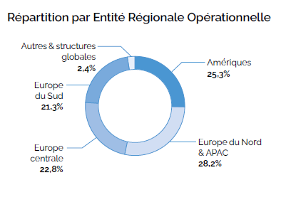
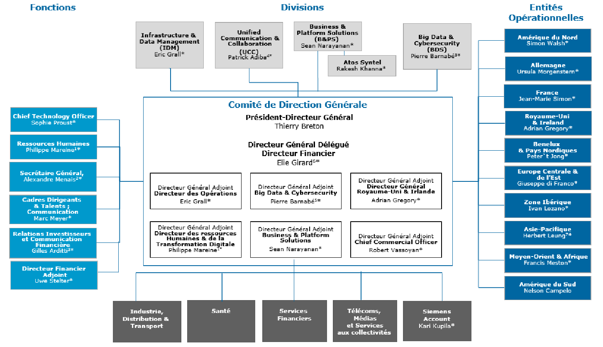

Atos est une grande entreprise de plus de 110 000 salariés dispersés dans 73 pays à travers le monde. L'entreprise s'est fortement renforcée en acquérant d'autres grosses entreprises tel que la branche informatique de Xerox ou encore Anthelio. Depuis 2012, Atos a changé de statut et répond désormais aux lois européennes plutôt qu'aux lois françaises. Atos est dirigée par un conseil d'administration composé de 7 à 18 membres, dont un président élu par ce conseil. Au delà de ce conseil se trouve un directeur général, lui même encore décidé par le conseil d'administration, qui possède de forts pouvoirs sur l'entreprise. Le conseil d'administration décide des objectifs et des moyens de les atteindre pour l'entreprise, tout en limitant les pouvoirs du directeur général.
